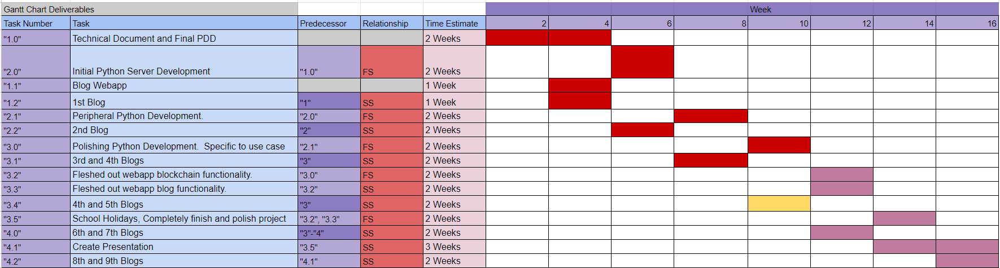
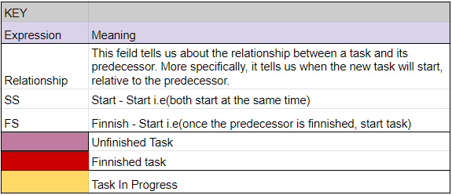

Progress Chart
Welcome to the fourth progress entry of logichain!
Important Updates
Since the last progress entry, here are the most pressing updates: The prototype LogiChain webapp is finished and you can access all of the assessment documents on google dive!
Heres the latest gaant chart updates.
 Challenges
Where to start...
Completing this project was such a great challenge, having to complete this webapp over the span of less than a week was so much fun and in the
end I created a really polished minimum viable product.
In reference to more specific problems, here are the things that I found the most challenging over the week:
- Learning APIs
- Getting hacked by my mate
- Smart Contracts
- Heroku App
Learning APIs
When I started this project, I had never programmed both sides of an API before i.e. server-side and front-end. I was pretty easy to pick up and only took me a few tries to get right. The problem with using the jquery AJAX function on frontend is that its very tedious in the way it handles the success of an API call, by the end of the project, I had probably spent a total hour trying to troubleshoot this function. To be honest though, I would probably still use it for the final product as its still very usable.
The reason I say "would use it" is because my class mate has crashed my webapp multiple times, the AJAX APIs are one of the things he exploited. So I will try to use a different method if possible.
Smart Contracts
When I designed the webapp, I planned to use XRPs Escrow functions,
but after fully implementing the escrows, following all the documentation on the subject, troubleshooting for ~10 hours and speaking with XRP director of engineering, I could not find out what was wrong
about my smart contracts. The error suggested that the contract was malformed, which the docs describe as “Unspecified problem with the format of the transaction.”,
but I am 90% sure it is not the way I have called the function.
This was a somewhat distressing problem at the time as my whole webapp revolves around the functionality of transactions over the XRP ledger, in the next section, I will describe how I solved this problem.
Heroku App
A few hours before the due date, I asked my mentor whether or not I would get extra marks if I deploy the project on heroku app so that anyone could access it, to which he said yes, so now I have a heroku app deployment! Jokes aside, deploying my first app on heroku was really stressful, especially when doing it during the last hour of submission.
Solution
Learning APIs
Like I mentioned above, creating the APIs wasn't very difficult, I but the solution I followed was to just do the appropriate research to make them.
Smart Contracts
If you're wondering how I actually managed to still integrate XRP transactions, what I did was a bit hacky, but it works for a proof of concept. What I ended up doing was managing the contracts conditions in python i.e. all the appropriate users signing the contract, on the webapp and keeping track of such in JSON/python. When all users have signed the contract, then a simple transaction is made on the XRP network. This solution is essentially an insecure pseudo-escrow, but once again, it works for a proof of concept.
Heroku App
This was really challenging to solve an hour before the due date, but thankfully my classmate gave me some pointers since hes familiar with the platform. From there I was able to do some research to get it up on heroku app with enough time to make a demo video.
Timeline of Progress
30/8/21
Today I finished the front end of the web app and a majority of the python/js code needed to have the API up and running, next is to connect the two and have ill have a running API.
31/8/21
4 pm
We now have a working API for users to register and sign up. I am now working to set up the internal pages of the webapp so that users can interact with the supply chain.
11 pm
I have spent about 3 hours trying to get the javascript API functionality to redirect the user through pages, I have never felt more dumb trying to solve such a simple problem. In the end, we have got working redirects so at least I don't need to worry about it again.
I may spend a few hours getting the front end of these dashboard pages ready and call it a night.
02/09/21
As of tonight, I have finished the functionality to let users choose which node they would like to be. After this, we want to show event data of users switching nodes, and the smart contracts being deployed.
06/09/21
Hello, I have not made a blog entry in a while as I have been buckling down on this assignment, at the time of writing this, I haven’t slept in ~35 hours but it’s been worth every second! I have now finished a large majority of the web app’s functionality, including the ‘escrows’ which I will no doubt talk about in the ‘challenges’ section of this progress entry, I have just finished the ‘accounts’ tab and have been working on the supporting documentation for some hours now.
It is 4am so I am going to sleep; I wonder if ill wake up in time for school (EDIT: I did not).
It is now ~12pm, I need to get these things done in the next 4 hours before submission:
- Deploy LogiChain on Heroku app
- Flesh out Readme.md
- Create a demo video
- Submit LogiChain to google drive
- Final touches on web app
- Comment code
I have never been more satisfied. I’ve completed all of the above and submitted. Talk to you soon 💖